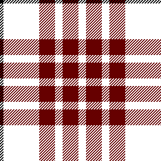
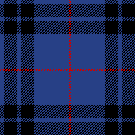

Tartan-Jagd!
Spielregeln
Willkommen beim Schottland-Kongress und zur Tartan-Jagd! Bei unserer Tartan-Jagd können Sie mit Loch Air eine fünftägige All-Inclusive-Reise für zwei Personen nach Edinburgh gewinnen.
Ziel des Spiels: Besuchen Sie die Stände der unten aufgeführten Sponsoren und suchen die dort ausgestellten Tartan-Muster. Sie werden aufgefordert ein Foto des Musters aufzunehmen. Wenn Sie alle 12 Tartans gefunden haben, begeben Sie sich zu Stand C930 in Halle 5, um sich für die Verlosung eintragen zu lassen.
C340

Cailean Netzwerk-Design
Kategorie: Daten und Netzwerke
Halle 4
- Cailean Netzwerk-Design
- Halle 4, Stand C340
- Dass Sie Ihren Kunden und Angestellten die Sicherheit Ihrer Online-Anwendungen und Daten garantieren können, ist der wichtigste Schlüssel zu wirtschaftlichem Erfolg. Die Bewältigung möglicher Netzwerk- und Server-Überlastungen und ein geeigneter Notfallplan sind für einen reaktionsfähigen, befriedigenden und stets erreichbaren Kundendienst von entscheidender Bedeutung. Fordern Sie noch heute bei uns eine kostenlose Netzwerkanalyse an.
- Gefunden!
C120
Eilionoir Grund und Boden
Kategorie: Stadtplanung
Halle 3
- Eilionoir Grund und Boden
- Halle 3, Stand C120
- Wir bieten Beratung für die Entwicklungsplannung und Flächengestaltung. Wir wirken als Entwickler in Landschafts- und Gebäudeprojekten mit.
- Gefunden!
C220

Keir Software
Kategorie: Software-Entwicklung
Halle 2
- Keir Software
- Halle 2, Stand C220
- Keir Software (KS) ist ein professionelles Software-Haus, das Sie unterstützen und Ihr Partner werden will. KS steht seit über 35 Jahren für die Berücksichtigung von Kundenwünschen, das Eingehen auf Projekt und Software-Anforderungen und die zeitgerechte und kostengünstige Entwicklung und Auslieferungen von Software-Lösungen.
- Gefunden!
C460

Schottisch und sparsam
Kategorie: Finanzdienstleistungen
Halle 4
- Schottisch und sparsam
- Halle 4, Stand C460
- Schottisch und sparsam ist ein führendes privates Finanzunternehmen. Es wurde 1857 gegründet und betreibt 24 Zweigstellen in ganz Schottland. Wir bieten Privatkredite für Autos, Entschuldungspläne und andere Kreditprodukte.
- Gefunden!
C170
Tartan Attack!
Kategorie: Software-Entwicklung
Halle 4
- Tartan Attack!
- Halle 4, Stand C170
- Tartan Attack! wurde 1995 von Kentigern Ridell gegründet. Unser bekanntestes Produkt ist das legendäre Spiel Angriff der Killer-Tartans.
- Gefunden!
C180

Laing Security
Kategorie: Software-Entwicklung
Halle 2
- Laing Security
- Halle 2, Stand C180
- Laing Security wurde von anerkannten und erfolgreichen Sicherheitsexperten gegründet und bietet Beratung in Datensicherheit und Workshops zur angewandten Anwendungssicherheit. Wir bieten strategischen und technischen Rat für Risikoverwaltung und Regeltreue.
- I found it!
C420

Nasmyth Weltweit
Kategorie: Software-Entwicklung
Halle 3
- Nasmyth Weltweit
- Halle 3, Stand C420
- Nasmyth Weltweit (NW) ist führende unabhängige Integrator von Sicherheitslösungen für Unternehmen. Das Unternehmen wurde vor über 60 Jahren in Edinburgh gegründet und bietet Sicherheitsdienste für führende Organisationen insbesondere für landesweite und örtliche Regierungsstellen wie im Gesundheitsektor.
- Gefunden!
C120

Gebrüder Haggis
Kategorie: Nahrung und Genussmittel
Halle 2
- Gebrüder Haggis
- Halle 2, Stand C120
- Die Gebrüder Haggis gehören zu den 75 größten Lebensmittelketten in Schottland und sind Schottlands größter unabhängiger Lebensmittelhändler.
- Gefunden!
C320

Barbier zum Franziskaner
Kategorie: Hygiene
Halle 1
- Barbier zum Franziskaner
- Halle 1, Stand C320
- Wir pflegen Edinburghs Häupter seit 1872.
- Gefunden!
C350
Bagpipes R Us
Kategorie: Kultur
Halle 4
- Bagpipes R Us
- Halle 4, Stand C350
- Bagpipes ‘r’ Us besteht seit Januar 2004. Wir verkaufen nur Instrumente, die wir auch selber spielen würden.
- Gefunden!
C240

Königreich der Kilts
Kategorie: Bekleidung
Halle 2
- Königreich der Kilts
- Halle 2, Stand C240
- Wir führen die edelsten Kilts von ganz Schottland. Unsere Kilts werden von Stars und Politikern getragen und inspirierten sogar Jean Paul Gaultiers berühmte Schottische Kollektion von 2001.
- Gefunden!
C140
Dudelsack dudeln
Kategorie: Kultur
Halle 3
- Dudelsack dudeln
- Halle 3, Stand C140
- Jahrhunderte lang kam der Dudelsack zum Einsatz, um Kriegern Mut einzuflößen, Hochzeiten zu feiern und Ereignisse jeglicher Natur das Besondere zu verleihen. Lernen Sie das Dudeln von den besten Lehrern Schottlands. Anfänger willkommen!
- Gefunden!